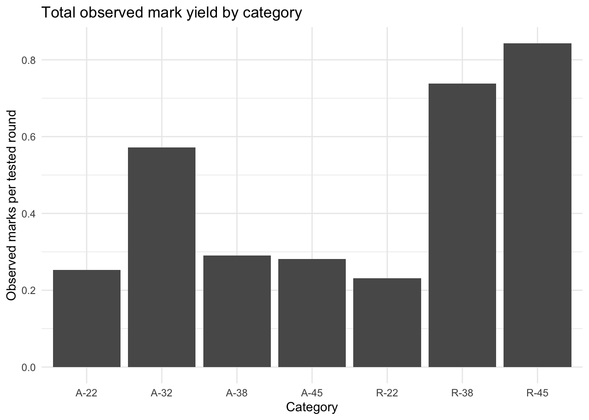
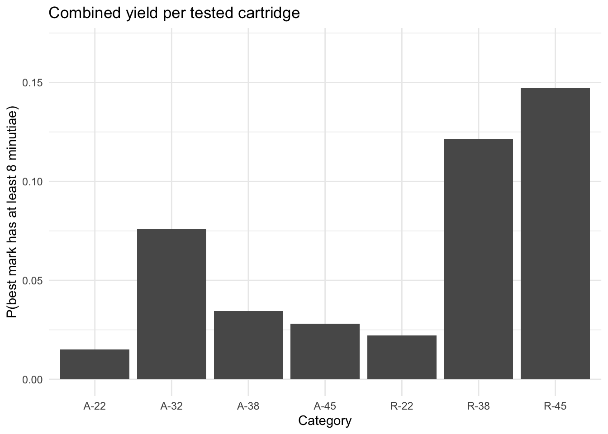

Two-Part Statistical Analysis of NIFM Occurrence and Mark Informativeness
Author
Maria Cuellar
Published
April 28, 2026
1 Purpose
This report updates the earlier grouped analysis using the new LOADS and MARKS workbooks.
The important change is that the new files contain two different units of observation:
LOADS gives the tested load-level denominator: load number, load quantity, and firearm/caliber category.
MARKS gives the observed mark-level data: load, cartridge, mark identifier, minutiae count, ESLR, log10 ESLR, and ID.
This means the two-part analysis should now be defined more carefully:
NIFM occurrence: at the cartridge/round level, did a tested cartridge yield at least one observed NIFM?
Mark informativeness: conditional on a cartridge yielding a NIFM, how informative is the mark? This can be analyzed either at the mark level or at the cartridge level using the best/maximum mark on each cartridge.
The cartridge-level version is usually the cleanest scientific target for occurrence and evidential yield, because a cartridge can have more than one mark. Counting mark rows directly would overstate the number of cartridges with NIFM.
2 Data
Code
options(stringsAsFactors =FALSE)needed_packages <-c("readxl", "dplyr", "tidyr", "knitr", "ggplot2")missing_packages <- needed_packages[!vapply(needed_packages, requireNamespace, quietly =TRUE, FUN.VALUE =logical(1))]if (length(missing_packages) >0) {stop("Please install the following packages before rendering this file: ",paste(missing_packages, collapse =", ") )}library(readxl)library(dplyr)library(tidyr)library(knitr)library(ggplot2)
Code
data_candidates <-list(loads =c("LOADS 4-28-26.xlsx","data/LOADS 4-28-26.xlsx","../data/LOADS 4-28-26.xlsx" ),marks =c("MARKS 4-28-26.xlsx","data/MARKS 4-28-26.xlsx","../data/MARKS 4-28-26.xlsx" ))loads_path <- data_candidates$loads[file.exists(data_candidates$loads)][1]marks_path <- data_candidates$marks[file.exists(data_candidates$marks)][1]if (is.na(loads_path)) stop("Could not find LOADS 4-28-26.xlsx")if (is.na(marks_path)) stop("Could not find MARKS 4-28-26.xlsx")loads_sheet <-if ("Loads"%in%excel_sheets(loads_path)) "Loads"elseexcel_sheets(loads_path)[1]marks_sheet <-if ("Marks"%in%excel_sheets(marks_path)) "Marks"elseexcel_sheets(marks_path)[1]loads_raw <-read_excel(loads_path, sheet = loads_sheet)marks_raw <-read_excel(marks_path, sheet = marks_sheet)clean_colnames <-function(x) { x <-gsub("\\r|\\n", " ", x) x <-gsub("[^A-Za-z0-9]+", "_", x) x <-gsub("^_+|_+$", "", x)tolower(x)}names(loads_raw) <-clean_colnames(names(loads_raw))names(marks_raw) <-clean_colnames(names(marks_raw))required_load_cols <-c("round_designation", "load", "load_quantity", "category")required_mark_cols <-c("load", "cartridge", "mark", "minutiae", "eslr", "log10eslr", "id")if (!all(required_load_cols %in%names(loads_raw))) {stop("LOADS is missing one or more required columns. Found: ", paste(names(loads_raw), collapse =", "))}if (!all(required_mark_cols %in%names(marks_raw))) {stop("MARKS is missing one or more required columns. Found: ", paste(names(marks_raw), collapse =", "))}loads <- loads_raw |>transmute(round_designation = round_designation,load =as.integer(load),load_quantity =as.integer(load_quantity),category =as.character(category),type =substr(category, 1, 1),caliber =sub("^[AR]-", "", category) ) |>filter(!is.na(load))marks <- marks_raw |>transmute(load =as.integer(load),cartridge =as.integer(cartridge),mark =as.character(mark),minutiae =as.integer(minutiae),eslr =as.numeric(eslr),log10_eslr =as.numeric(log10eslr),id =as.integer(id) ) |>filter(!is.na(load), !is.na(cartridge), !is.na(mark))marks_with_category <- marks |>left_join(loads |>select(load, category, type, caliber, load_quantity), by ="load")unmatched_marks <- marks_with_category |>filter(is.na(category))if (nrow(unmatched_marks) >0) {stop("Some MARKS rows have load numbers not present in LOADS.")}
3 Data Structure Checks
The first check is whether the denominators and observed mark rows are internally consistent.
Code
load_summary <- loads |>group_by(category, type, caliber) |>summarize(n_loads =n(),rounds_tested =sum(load_quantity),.groups ="drop" ) |>arrange(category)mark_summary <- marks_with_category |>group_by(category) |>summarize(observed_mark_rows =n(),observed_loads_with_marks =n_distinct(load),observed_cartridges_with_marks =n_distinct(paste(load, cartridge)),.groups ="drop" )data_structure_summary <- load_summary |>left_join(mark_summary, by ="category") |>mutate(across(c(observed_mark_rows, observed_loads_with_marks, observed_cartridges_with_marks),~replace_na(.x, 0) ))kable( data_structure_summary,caption ="Basic structure of the new LOADS and MARKS files.")
Basic structure of the new LOADS and MARKS files.
category
type
caliber
n_loads
rounds_tested
observed_mark_rows
observed_loads_with_marks
observed_cartridges_with_marks
A-22
A
22
21
198
50
14
42
A-32
A
32
16
105
60
11
44
A-38
A
38
40
348
101
23
82
A-45
A
45
20
178
50
12
41
R-22
R
22
29
225
52
21
46
R-38
R
38
21
107
79
16
48
R-45
R
45
17
102
86
11
41
4 Constructing the Round-Level Occurrence Dataset
For Part 1, the numerator is the number of unique tested cartridges with at least one mark. The denominator is the total number of cartridges tested, given by load_quantity.
This is not the same as the number of rows in MARKS, because a single cartridge can have multiple observed marks.
Code
cartridge_marks <- marks |>group_by(load, cartridge) |>summarize(n_marks =n(),max_minutiae =max(minutiae, na.rm =TRUE),max_log10_eslr =max(log10_eslr, na.rm =TRUE),any_id =as.integer(any(id ==1, na.rm =TRUE)),.groups ="drop" )load_occurrence <- loads |>left_join( cartridge_marks |>group_by(load) |>summarize(cartridges_with_nifm =n_distinct(cartridge),total_marks =sum(n_marks),.groups ="drop" ),by ="load" ) |>mutate(cartridges_with_nifm =replace_na(cartridges_with_nifm, 0L),total_marks =replace_na(total_marks, 0L),cartridges_without_nifm = load_quantity - cartridges_with_nifm )if (any(load_occurrence$cartridges_without_nifm <0)) {stop("At least one load has more cartridges with marks than load_quantity.")}occurrence_by_category <- load_occurrence |>group_by(category, type, caliber) |>summarize(n_loads =n(),rounds_tested =sum(load_quantity),rounds_with_nifm =sum(cartridges_with_nifm),rounds_without_nifm =sum(cartridges_without_nifm),total_marks =sum(total_marks),.groups ="drop" ) |>mutate(occurrence_rate = rounds_with_nifm / rounds_tested,marks_per_tested_round = total_marks / rounds_tested,marks_per_nifm_round = total_marks / rounds_with_nifm ) |>arrange(category)kable( occurrence_by_category |>mutate(occurrence_rate =round(occurrence_rate, 3),marks_per_tested_round =round(marks_per_tested_round, 3),marks_per_nifm_round =round(marks_per_nifm_round, 3) ),caption ="Occurrence of any NIFM by category, using unique load-cartridge pairs.")
Occurrence of any NIFM by category, using unique load-cartridge pairs.
ggplot(plot_data, aes(x = category, y = marks_per_tested_round)) +geom_col() +labs(x ="Category",y ="Observed marks per tested round",title ="Total observed mark yield by category" ) +theme_minimal()

6 Part 1: NIFM Occurrence
The occurrence analysis is now a grouped-binomial model where the numerator is the number of unique cartridges with at least one NIFM and the denominator is the total number of tested cartridges.
Category-specific occurrence estimates for Part 1.
category
rounds_tested
rounds_with_nifm
observed_probability
log_odds
A-22
198
42
0.212
-1.312
A-32
105
44
0.419
-0.327
A-38
348
82
0.236
-1.177
A-45
178
41
0.230
-1.206
R-22
225
46
0.204
-1.359
R-38
107
48
0.449
-0.206
R-45
102
41
0.402
-0.397
6.3 Exploratory Main-Effects Model
Because there are only seven category-level rows, this model is exploratory. It asks whether the pattern can be partially summarized by firearm type and caliber.
Code
occurrence_fit <-glm(cbind(rounds_with_nifm, rounds_without_nifm) ~ type +factor(caliber),data = occurrence_by_category,family =quasibinomial())summary(occurrence_fit)
Call:
glm(formula = cbind(rounds_with_nifm, rounds_without_nifm) ~
type + factor(caliber), family = quasibinomial(), data = occurrence_by_category)
Coefficients:
Estimate Std. Error t value Pr(>|t|)
(Intercept) -1.6668 0.3428 -4.862 0.0398 *
typeR 0.5752 0.3295 1.746 0.2229
factor(caliber)32 1.3401 0.5684 2.358 0.1425
factor(caliber)38 0.6033 0.3825 1.577 0.2555
factor(caliber)45 0.5603 0.4157 1.348 0.3101
---
Signif. codes: 0 '***' 0.001 '**' 0.01 '*' 0.05 '.' 0.1 ' ' 1
(Dispersion parameter for quasibinomial family taken to be 5.255861)
Null deviance: 47.073 on 6 degrees of freedom
Residual deviance: 10.283 on 2 degrees of freedom
AIC: NA
Number of Fisher Scoring iterations: 4
Code
occurrence_fitted <- occurrence_by_category |>mutate(observed = occurrence_rate,fitted =fitted(occurrence_fit) ) |>select(category, rounds_tested, observed, fitted)kable( occurrence_fitted |>mutate(observed =round(observed, 3),fitted =round(fitted, 3) ),caption ="Observed and fitted NIFM occurrence rates from the exploratory grouped-binomial model.")
Observed and fitted NIFM occurrence rates from the exploratory grouped-binomial model.
category
rounds_tested
observed
fitted
A-22
198
0.212
0.159
A-32
105
0.419
0.419
A-38
348
0.236
0.257
A-45
178
0.230
0.249
R-22
225
0.204
0.251
R-38
107
0.449
0.380
R-45
102
0.402
0.370
7 Part 2: Informativeness Among Observed NIFM Cartridges
The cleanest cartridge-level version of Part 2 uses the best mark on each cartridge, because a cartridge can have multiple marks.
This asks: conditional on a cartridge having at least one NIFM, how informative is its best observed mark?
high_fit_category <-glm(cbind(best_ge_8, nifm_cartridges - best_ge_8) ~0+ category,data = cartridge_informativeness_by_category,family =binomial())high_estimates <- cartridge_informativeness_by_category |>mutate(observed_probability = p_best_ge_8,log_odds =coef(high_fit_category) ) |>select(category, nifm_cartridges, observed_probability, log_odds)kable( high_estimates |>mutate(observed_probability =round(observed_probability, 3),log_odds =round(log_odds, 3) ),caption ="Category-specific probabilities that a NIFM cartridge has a best mark with at least 8 minutiae.")
Category-specific probabilities that a NIFM cartridge has a best mark with at least 8 minutiae.
Call:
glm(formula = cbind(best_ge_8, nifm_cartridges - best_ge_8) ~
type + factor(caliber), family = quasibinomial(), data = cartridge_informativeness_by_category)
Coefficients:
Estimate Std. Error t value Pr(>|t|)
(Intercept) -2.8796 0.3446 -8.357 0.0140 *
typeR 0.9371 0.2524 3.713 0.0655 .
factor(caliber)32 1.3756 0.4626 2.974 0.0969 .
factor(caliber)38 1.0353 0.3488 2.969 0.0972 .
factor(caliber)45 1.2233 0.3611 3.387 0.0772 .
---
Signif. codes: 0 '***' 0.001 '**' 0.01 '*' 0.05 '.' 0.1 ' ' 1
(Dispersion parameter for quasibinomial family taken to be 0.6235702)
Null deviance: 17.9425 on 6 degrees of freedom
Residual deviance: 1.2536 on 2 degrees of freedom
AIC: NA
Number of Fisher Scoring iterations: 4
Code
high_fitted <- cartridge_informativeness_by_category |>mutate(observed = p_best_ge_8,fitted =fitted(high_fit) ) |>select(category, nifm_cartridges, observed, fitted)kable( high_fitted |>mutate(observed =round(observed, 3),fitted =round(fitted, 3) ),caption ="Observed and fitted probabilities that a NIFM cartridge has a best mark with at least 8 minutiae.")
Observed and fitted probabilities that a NIFM cartridge has a best mark with at least 8 minutiae.
category
nifm_cartridges
observed
fitted
A-22
42
0.071
0.053
A-32
44
0.182
0.182
A-38
82
0.146
0.137
A-45
41
0.122
0.160
R-22
46
0.109
0.125
R-38
48
0.271
0.288
R-45
41
0.366
0.328
8 Mark-Level ESLR Analysis
The MARKS file also includes ESLR and log10 ESLR. Since ESLR is mark-level, this section treats individual marks as the observational unit. This is useful descriptively, but should not be interpreted as fully independent evidence because marks are clustered within cartridges and loads.
Combined cartridge-level evidential yield by category.
category
rounds_tested
rounds_with_nifm
occurrence_rate
p_best_ge_8
p_best_ge_10
any_id_rate
yield_best_ge_8
yield_best_ge_10
yield_any_id
A-22
198
42
0.212
0.071
0.024
0.048
0.015
0.005
0.010
A-32
105
44
0.419
0.182
0.091
0.159
0.076
0.038
0.067
A-38
348
82
0.236
0.146
0.024
0.146
0.034
0.006
0.034
A-45
178
41
0.230
0.122
0.000
0.122
0.028
0.000
0.028
R-22
225
46
0.204
0.109
0.022
0.109
0.022
0.004
0.022
R-38
107
48
0.449
0.271
0.146
0.292
0.121
0.065
0.131
R-45
102
41
0.402
0.366
0.171
0.341
0.147
0.069
0.137
Code
ggplot(combined_yield, aes(x = category, y = yield_best_ge_8)) +geom_col() +coord_cartesian(ylim =c(0, max(combined_yield$yield_best_ge_8, na.rm =TRUE) *1.15)) +labs(x ="Category",y ="P(best mark has at least 8 minutiae)",title ="Combined yield per tested cartridge" ) +theme_minimal()

10 Interpretation
The new data support the same two-part framework, but the interpretation is now more precise because the denominator is available.
The most important statistical point is that occurrence should be modeled at the cartridge level, using LOADS for the denominator and unique load/cartridge pairs in MARKS for the numerator. Raw rows in MARKS are observed marks, not tested cartridges.
The main scientific quantities are therefore:
P(any NIFM): the probability that a tested cartridge yields at least one observed NIFM.
P(informative mark | any NIFM): the probability that a NIFM cartridge has a best mark above a practical informativeness threshold.
P(informative NIFM): the combined yield per tested cartridge.
The ESLR variable creates a stronger version of the Part 2 analysis because it is a direct measure of associative value. Minutiae thresholds remain useful for communication, but ESLR is closer to the evidential question.
11 Limitations
These analyses remain preliminary.
The models above use category-level summaries, so they do not fully account for clustering within loads.
The mark-level ESLR analysis treats marks descriptively; formal inference should account for clustering of marks within cartridges and loads.
The category-level main-effects models are exploratory because there are only seven categories.
The choice of informativeness threshold, such as 8 or 10 minutiae, should be justified substantively.
ESLR is missing for some marks, so ESLR analyses should report the amount of missingness.
12 Recommended Next Analysis Steps
The next version should move from category-level summaries to individual-level models:
A cartridge-level logistic model for whether any NIFM occurs.
A cartridge-level model for whether the best mark has at least 8 or 10 minutiae.
A mark-level or cartridge-best-mark model for log10 ESLR.
Random effects or clustered standard errors for load, and possibly donor/gun if those identifiers are available.
A combined-yield analysis that reports practical probabilities per tested cartridge.